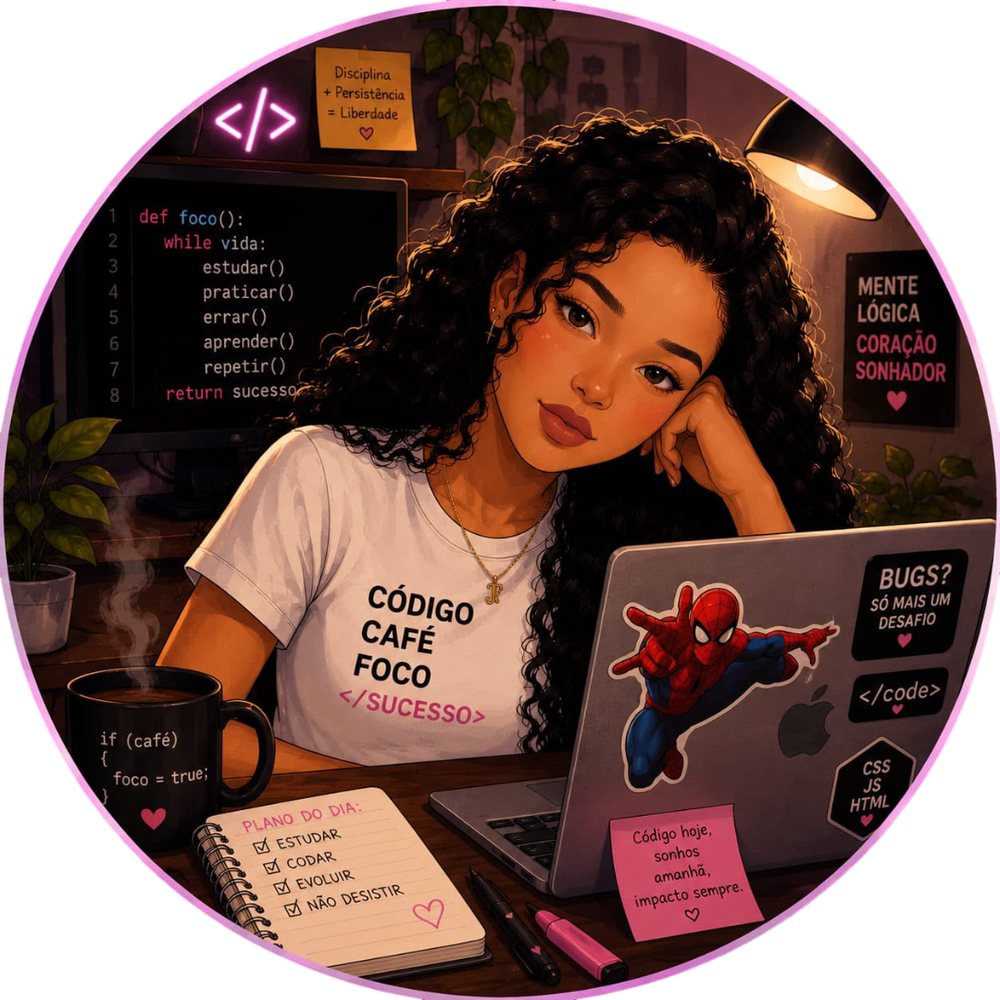
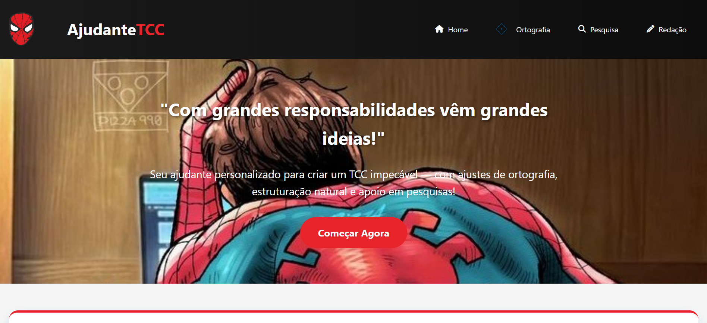
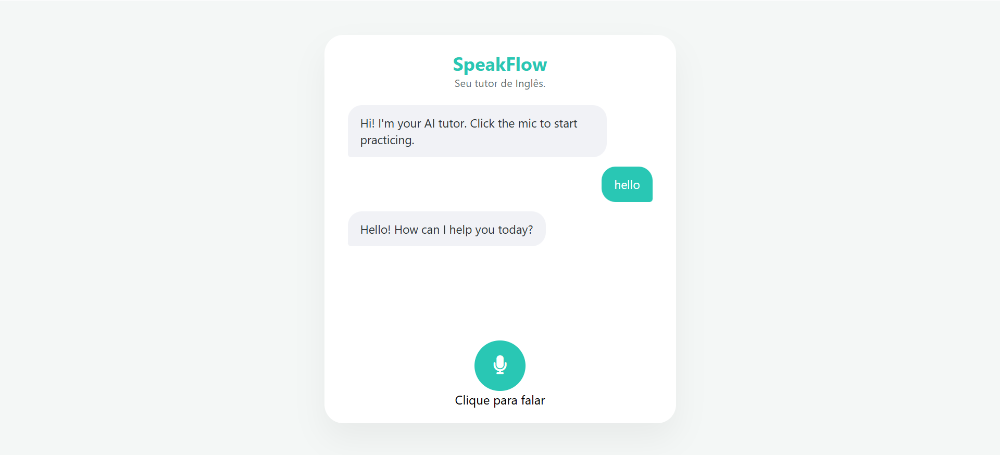
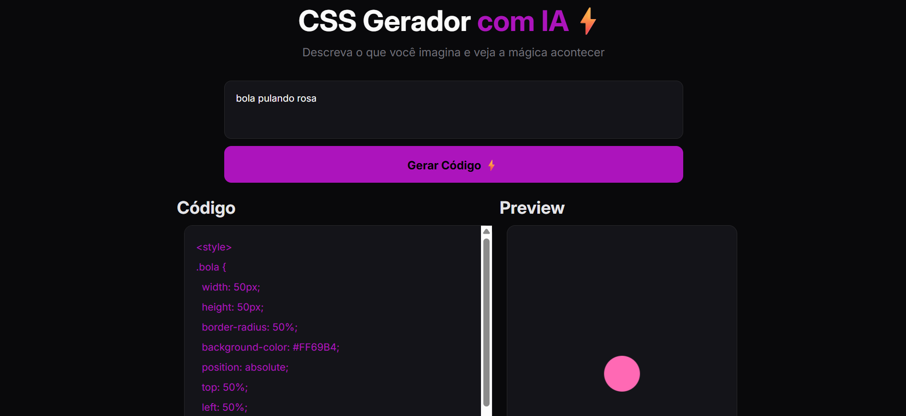
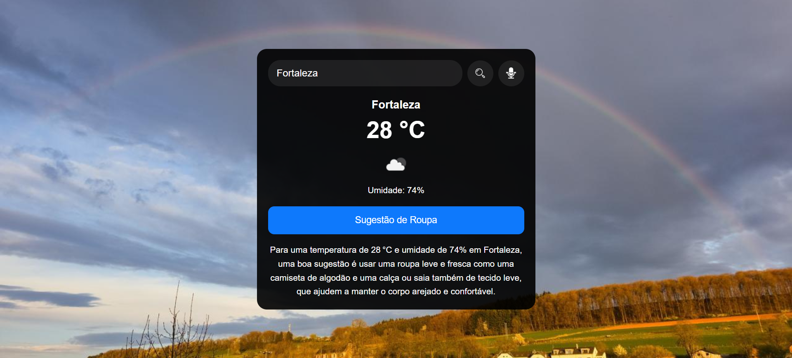
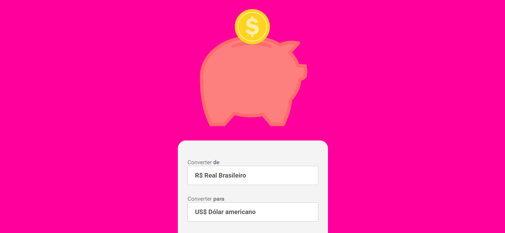
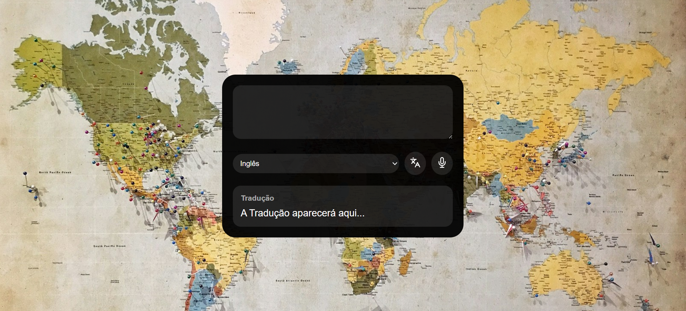

Um projeto web para auxiliar estudantes na elaboração de seus Trabalhos de Conclusão de Curso (TCC), com funcionalidades de ajuste de ortografia, pesquisa de temas e geração de textos — tudo com cara do Homem-Aranha! Este aplicativo foi desenvolvido para simplificar tarefas comuns na elaboração de TCCs, utilizando a API da OpenAI para processar textos de forma inteligente. O design temático homenageia o Homem-Aranha, trazendo identidade visual divertida e funcional. Pesquisa de Tema: Gera resumos, referências de artigos ou dados estatísticos sobre o tema escolhido.
Ver Projeto → Ver Código →
O SpeakFlow é uma aplicação web interativa projetada para ajudar brasileiros a praticarem inglês de forma natural. Utilizando tecnologias de ponta em Inteligência Artificial, o projeto permite que você fale em voz alta, receba correções gramaticais em tempo real e ouça a pronúncia correta da IA. Reconhecimento de Voz: Captura sua fala em inglês ou português através do microfone do navegador. Tutor Inteligente (PT-BR): A IA entende quando você fala português, traduz para o inglês e corrige erros gramaticais específicos. Dêem uma conferida.

O CSS Gerador com IA é uma ferramenta que transforma descrições textuais em código CSS funcional e exibe um preview em tempo real do elemento estilizado. Basta descrever o que você imagina e a IA cuidará do resto! Insira uma descrição textual do elemento que deseja criar no campo de entrada (ex: "bola pulando rosa"). Clique no botão "Gerar Código". O sistema enviará a descrição para a API do Groq, que retornará o código CSS correspondente. Visualize o código gerado na seção "Código" e o resultado final na seção "Preview". Dêem uma conferida.
Ver Projeto → Ver Código →
Projeto web que combina dados de clima em tempo real com inteligência artificial para sugerir roupas e atividades com base na temperatura, umidade e condições meteorológicas da cidade pesquisada. O objetivo é facilitar o dia a dia das pessoas, oferecendo não só informações sobre o clima, mas também recomendações personalizadas usando IA. Além disso, conta com reconhecimento de voz para buscar cidades de forma prática! Busca de previsão do tempo por nome de cidade (escrita ou voz). Sugestões de roupas e informações do clima (via IA).
Ver Projeto → Ver Código →
Um conversor de moedas simples e funcional, desenvolvido com HTML, CSS e foco em JavaScript para a lógica de conversão e manipulação do DOM. O projeto permite converter valores em Real Brasileiro (BRL) para Dólar Americano (USD), Euro (EUR), Won Sul-Coreano (KRW) e Libra Esterlina (GBP). Entrada de valor em Real Brasileiro, Conversão instantânea para 4 moedas internacionais, Atualização dinâmica dos resultados na tela, Interface responsiva e intuitiva, Tratamento básico de valores inválidos (ex: caracteres não numéricos).
Ver Projeto → Ver Código →
Este projeto é um tradutor que combina reconhecimento de voz exclusivo em português brasileiro (pt-BR) para captura de entrada oral e utiliza a API MyMemory Translated para realizar traduções precisas para múltiplos idiomas-alvo. Facilita a comunicação de falantes de português com pessoas de outras línguas, com saída em texto. Reconhecimento de voz apenas em português brasileiro (pt-BR), Tradução para diversos idiomas-alvo via API MyMemory Translated, Entrada por voz ou texto manual, Exibição da tradução em texto, Interface responsiva (compatível com web).
Ver Projeto → Ver Código →Olá, me chamo Ingrid Farias, estudante do último ano de Filosofia e apaixonada por tecnologia, em transição de carreira para Front-End. Atualmente, foco meu desenvolvimento em HTML, CSS e JavaScript. Minha graduação em Filosofia está fortalecendo minha visão analítica, comunicação clara e resolução de problemas. Experiências como Auxiliar de Sala aprimoraram minha organização, colaboração e trabalho em equipe – habilidades essenciais para o ambiente de desenvolvimento de software.
Atualmente, estou aprendendo e criando projetos com HTML, CSS e JavaScript, além de iniciar o aprendizado de React e TypeScript.
Estou em busca de uma oportunidades para estágio, projetos e vagas júnior no mercado de desenvolvimento web, onde eu possa aplicar meus conhecimentos e contribuir para o desenvolvimento de soluções digitais inovadoras.